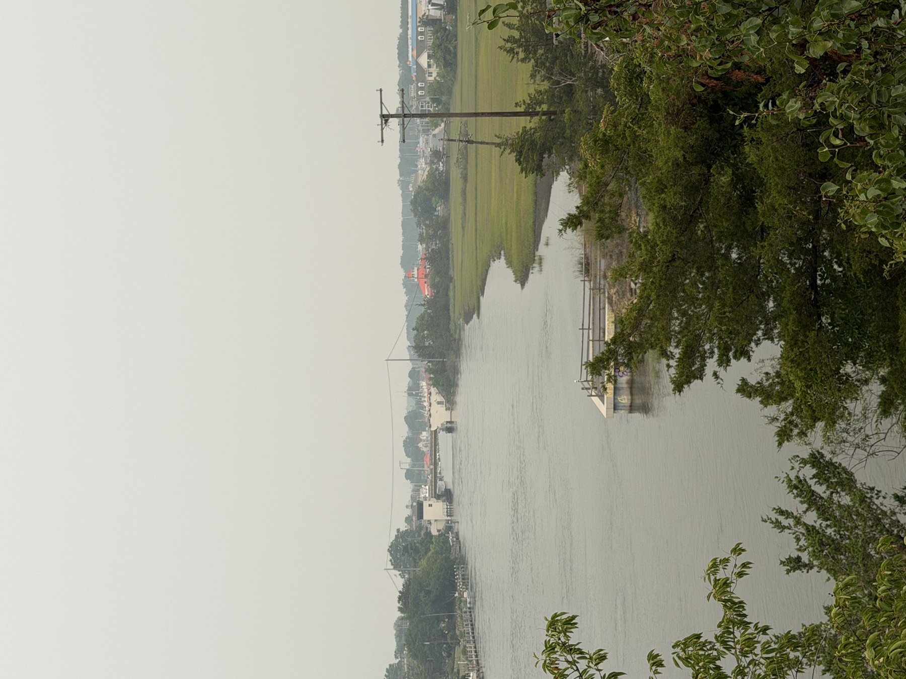

The ship called Overfalls never stood the Overfalls station. It carries the name in honor of it, and the story of how that happened runs from a Maine shipyard to a one-dollar sale in Lewes.
What a lightship was
A lightship did a lighthouse's job from a fixed point on the water, where building a tower was not possible. It was a ship that stayed put. The one now in Lewes, designated LV-118, was the last lightship built for the U.S. Lighthouse Service.
Built in Maine, 1938
LV-118 was built in 1938 at the Rice Brothers shipyard in East Boothbay, Maine. It incorporated what was then the latest in lightship design, including steel bulkheads that divided the hull into compartments.
Thirty-four years off New England
Its working life was spent at three stations far from Delaware:
- 1938 to 1957: Cornfield Point, Connecticut.
- 1958 to 1962: Cross Rip, near Cape Cod, Massachusetts.
- 1962 to 1972: Boston.
In 1972 it was taken out of service. Along the way it also carried the Coast Guard designation WAL-539.
A Delaware name
In 1973 the Coast Guard donated the ship to the Lewes Historical Society to serve as a floating museum. It was given a new name, Overfalls, in honor of the lightship station closest to Lewes, at the mouth of Delaware Bay. The ship in Lewes is, in that sense, a memorial to a station as much as a vessel with its own history.
The one-dollar sale
Keeping a historic steel ship afloat is a long job. A group called the Friends of the Lightship formed inside the historical society and later incorporated as an independent nonprofit foundation, which bought the ship for one dollar. Its mission, in the foundation's telling, was plain: save the ship, make it sustainable and put it in a proper setting. On Dec. 7, 2001, ownership passed to the Overfalls Maritime Museum Foundation.
The ship has since been designated a National Historic Landmark.
Seeing it
The Overfalls is one of the landmarks tied to Lewes's Maritime Weekend, when the Boast the Coast festival offered free visits and tours associated with the ship on Oct. 3. Its regular open days and hours are set by the foundation and change with the season; check the Overfalls Foundation's own schedule before you plan a visit.
Sources: The Overfalls Foundation's history of the ship (overfalls.org) for its construction, design, stations, the 1973 donation and renaming, the Friends of the Lightship and the 2001 transfer; the Delaware Public Archives historical marker for Lightship Overfalls (archives.delaware.gov); the Historical Marker Database transcription. Delaware Beach Finds did not visit the ship for this story. Visiting days and hours are the foundation's; check its current schedule.